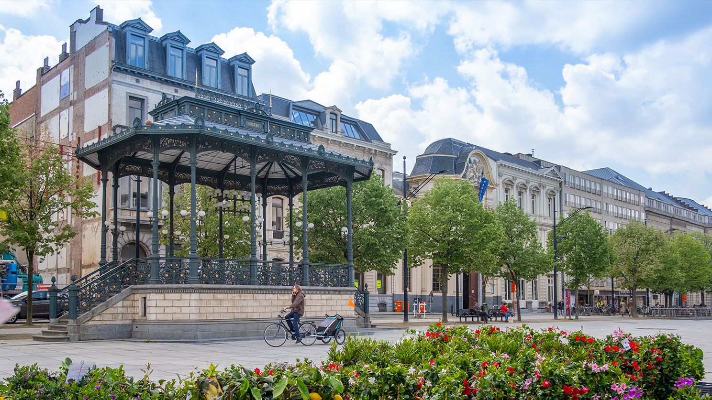

ROCA

met hoogwaardige architectuur
op een unieke locatie
ARCHITECTUUR
Ingetogen natuursteen. Ruime glaspartijen. Een delicaat spel van gevelvlakken met hyperfijn schrijnwerk in aluminium. De architectuur van ROCA verbindt subtiliteit met een hoogwaardige afwerking.
Van de discrete details tot de monolithische impressie: liefhebbers van architectuur vinden in ROCA een echte thuis.
Met de signatuur van BRITSOM PHILIPS architects.
BRITSOM PHILIPS architects
INTERIEUR
Kwalitatieve materialen, uitgepuurde details, strakke accenten.
LOCATIE
Het ROCA project is gelegen in de Walpoortstraat, op een kruispunt van kunst, cultuur en winkels.
DE KROOK
100 meterVan de iconische nieuwe stadsbibliotheek De Krook over het culture instituut De Minard schouwburg tot en met de vaste waarde van de Kouter. ROCA nestelt zich in het hart van Gent.

DE MINARD
100 meterDe betere winkelwandelstraten bevinden zich op een steenworp. Kortedagsteeg, Brabantdam en de Sint-Pietersnieuwstraat.
